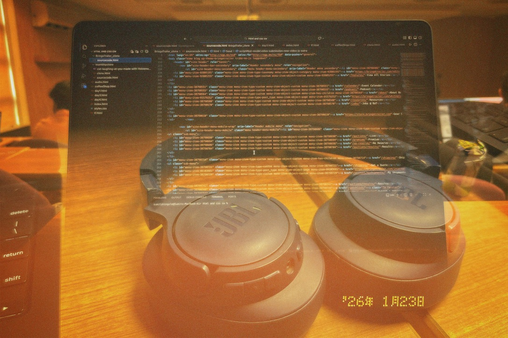
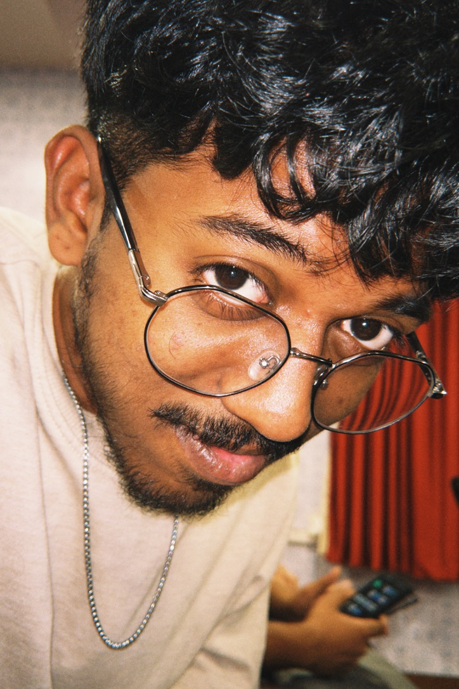
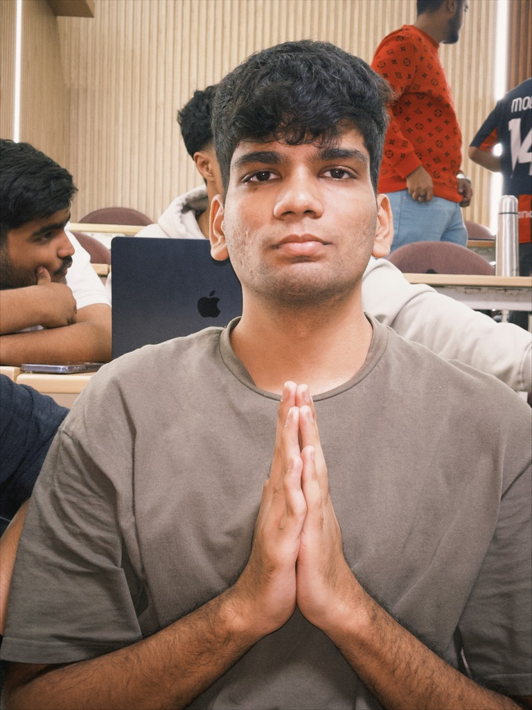
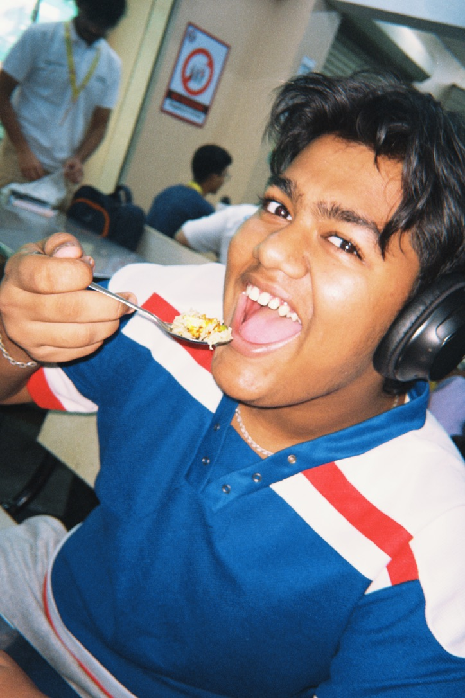
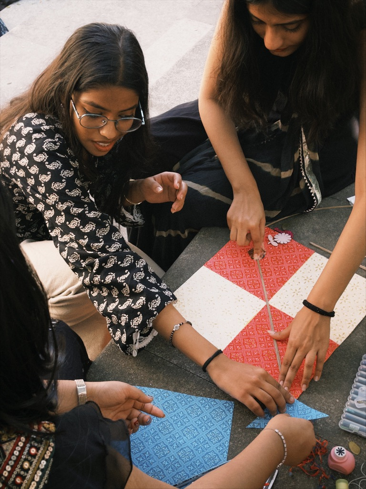
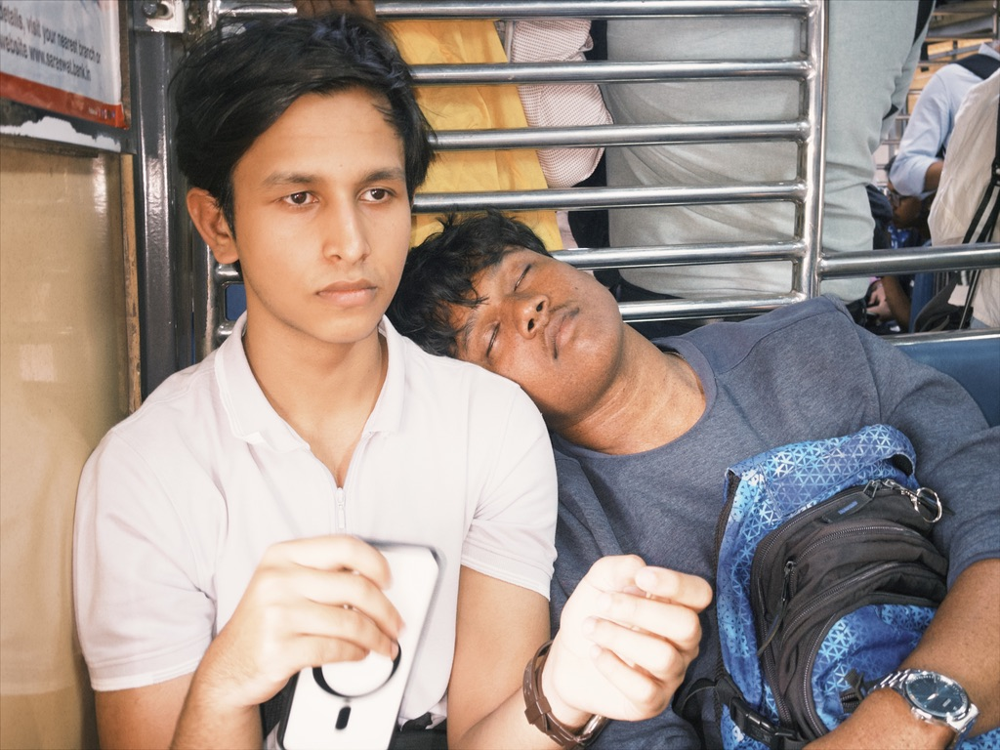

ITM Football Fumble evidence, circa 2026

PEAK Unemployment example, circa 2026

Future ITM BTech FC contenders, circa 2026

Shivjaynti Palki, circa 2026

Website Clone source code, circa 2026

RnD Workshop Attendee, circa 2026

Bajrang dal Intern, circa 2026

Saddest ITM Student, circa 2026

Makar Sankranti Winners, circa 2026

Love is in the Train, circa 2026